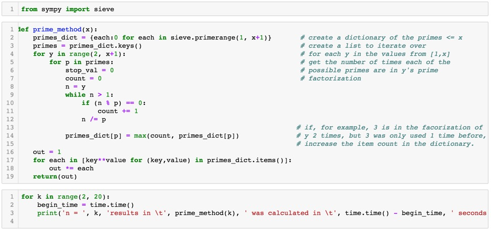

In our Outcomes session this week, we had a lecture on how to prepare for a technical interview. Included
in the material were a few questions that were logic based or "how would you program" this type of questions.
One question that got a lot of discussion had to do with a question that was in the lowest common denominator
category of questions.
In particular, it had to do with solving for the smallest value of x such that x was divisible by each integer
in the range [1,y].
I decided to code out a few solutions -- basic brute force, try to optimize the brute force method, and then
looking to math / logic for a way to get the answer more directly.
The more elegant solution involves breaking down each value in the range [1,y] into a prime factorization. If you
keep track of each prime number and the maximum number of times that prime is needed, you can then compute the answer
directly. I used the 'sympy' library to get the intial list of primes in the range [1,y] and then kept track of the
occurances in a python dictionary. The last step is then to take the product of each of the keys of the dictionary
raised to the power of their item in the dictionary.
You can check out the Python code in my GitHub repo:
1ScottWright GitHub
I've also reproduced the prime factorization portion of the code below:


Python Programming